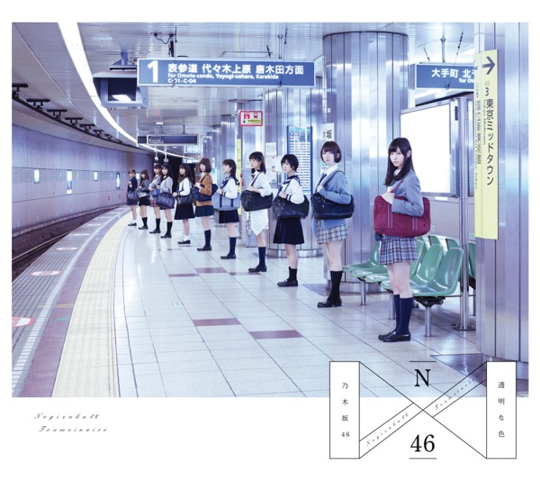

← 楽曲図鑑に戻る

初収録リリース「透明な色」のジャケット
乃木坂46
発売日：2015-01-07収録：透明な色（1stAL）種別：ユニット曲作曲：宮坂聡彦編曲：佐々木裕ライブ披露：18件
衛藤美彩、桜井玲香、若月佑美
僕がいる場所、誰かは味方、革命の馬、あなたのために弾きたい、傾斜する、なぞの落書き、自由の彼方、ひとりよがり
← 前の曲「僕がいる場所」次の曲「革命の馬」 →
 サカミチ
サカミチ